Estudante: André Alfonso Peixoto
GONZALEZ, R; WOODS, R; EDDINS, S. Digital Image Processing Using MATLAB 2. 2. ed. Gatesmark Publishing, 2009. Mathworks Stack Exchange Wikipedia
%{
* Defina as transformada de intensidade estudadas
- Crie uma função que recebe uma imagem e ‘Melhore’ essa imagem de entrada com transformadas de intensidade (adicionando e variando parâmetros)
--- Aplique em um exemplo comente o resultado
* Defina algumas formas de equalizar histograma
- Aplique em uma imagem comente os resultados.
* Defina correlação e convoluçao e filtro espacial.
- Utilice a função filtro (‘filtro espacial’) escolha uma mascara w1 e w2. Escolha algumas imagens diferentes
--- Aplique w1, comente os resultados
--- Aplique w2, comente os resultados
%}
pkg load signal; pkg load symbolic; pkg load image;
img1 = imread("einstein.png"); img2 = imread("doggo.bmp"); img3 = imread("lena.bmp");
img4 = imcomplement(img1); figure subplot(1,2,1); imshow(img1); title("Einstein original"); subplot(1,2,2); imshow(img4,[]); title("Einstein negativo");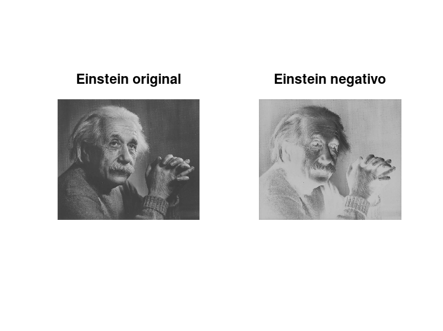
img5 = imadjust(img2,[],[0.5 1]); figure subplot(1,2,1); imshow(img2); title("Arte de Michelangelo original"); subplot(1,2,2) imshow(img5,[]); title("Arte de Michelangelo linearizada");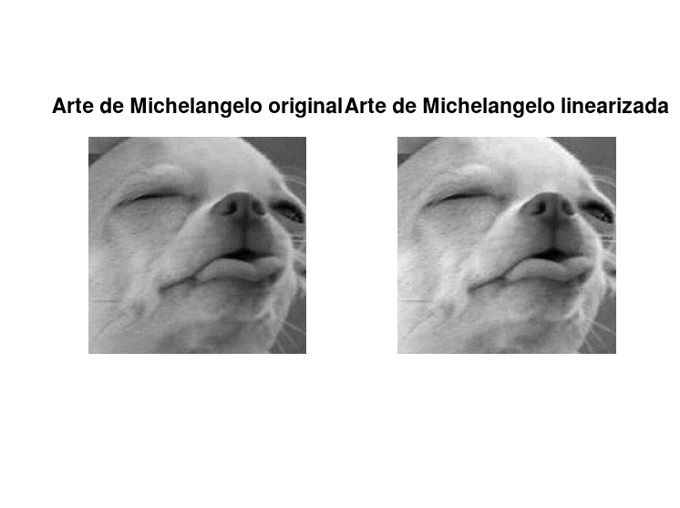
img6 = imread("lena.bmp"); figure; imshow(img6,[]) title("Lena original"); c = 100; logt = c * log(1 + double(img6)); figure; imshow(logt,[]); title("Lena realçada com logaritmo");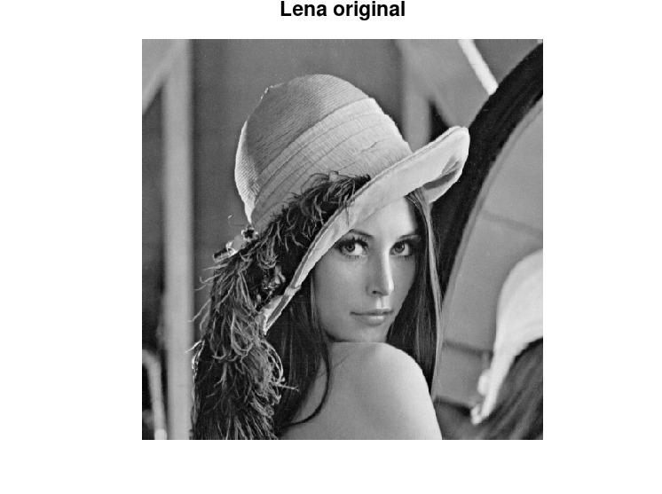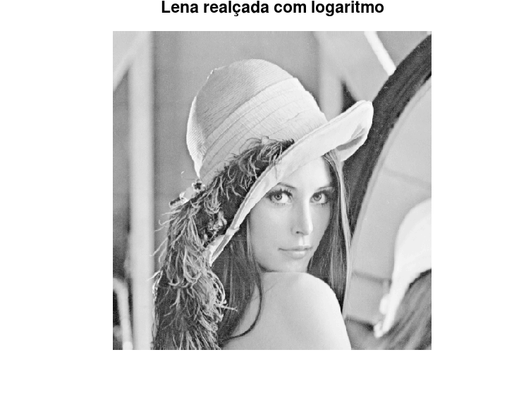
img7 = imread("doggo.bmp"); figure subplot(1,2,1); imshow(img7,[]); title ("Cachorro original"); subplot(1,2,2); imhist(img7); title("Histograma");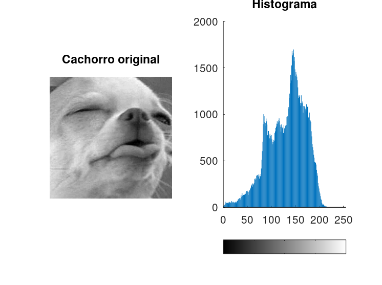
img8 = imread("lena.bmp"); figure subplot(1,2,1); imshow(img8,[]); title ("Lena original"); subplot(1,2,2); imhist(img8); title("Histograma");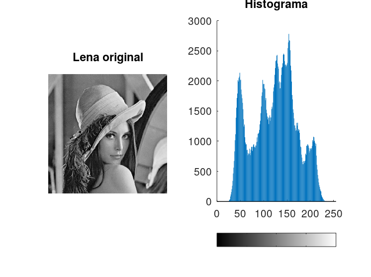
img9 = imread("einstein.png"); figure subplot(1,2,1); imshow(img9,[]); title ("Einstein original"); subplot(1,2,2); imhist(img9); title("Histograma");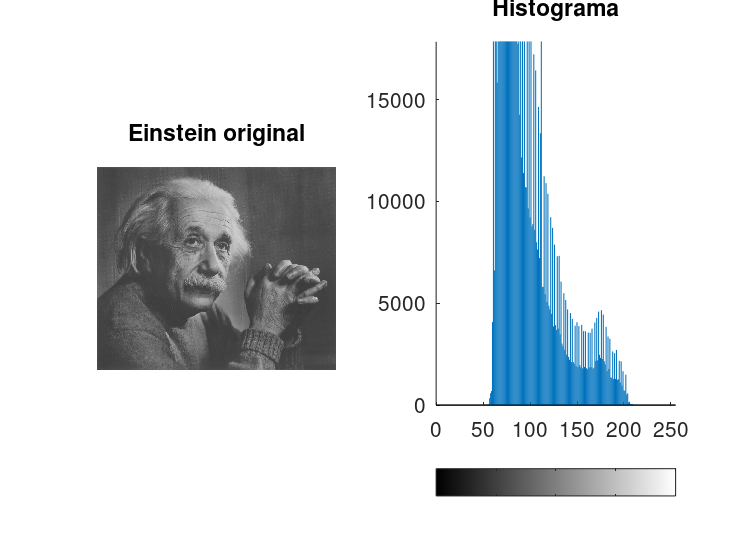
img10 = imread("lena.bmp"); img10 = gray2ind(img10); h = histeq(img10); figure subplot(2,3,1); imshow(img10,[]); title("Lena original"); subplot(2,3,[2 3]); imhist(img10); title("Histograma original"); subplot(2,3,4); imshow(h,[]); title("Lena normalizada"); subplot(2,3,[5 6]); imhist(h); title("Histograma equalizado");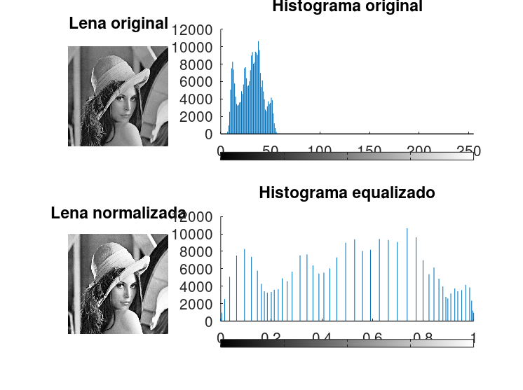
img11 = imread("doggo.bmp"); img11 = gray2ind(img11); h = histeq(img11); figure subplot(2,3,1); imshow(img11,[]); title("Cachorro original"); subplot(2,3,[2 3]); imhist(img11); title("Histograma original"); subplot(2,3,4); imshow(h,[]); title("Cachorro normalizado"); subplot(2,3,[5 6]); imhist(h); title("Histograma equalizado");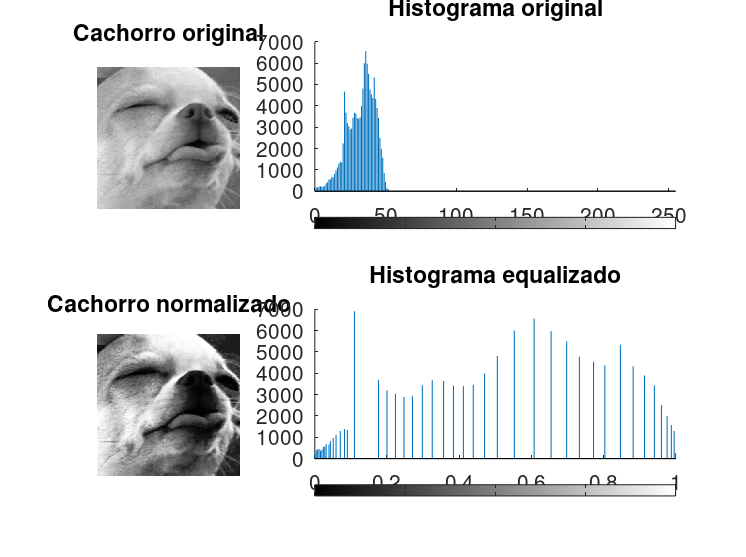
img12 = imread("lena.bmp"); w1 = (1/9)*ones(3); w2 = [1 0 1; 1 -3 1; 0 1 0;]; w3 = [1 1 0; 1 -6 1; 1 1 1;]; imgw1 = imfilter(img12,w1); imgw2 = medfilt2(img12); imgw3 = imfilter(img12,w2); imgw4 = imfilter(img12,w3); figure subplot(3,2,1); imshow(img12,[]); title("Original"); subplot(3,2,2); imshow(imgw1,[]); title("Filtro 1"); subplot(3,2,3); imshow(imgw2,[]); title("Filtro 2"); subplot(3,2,4); imshow(imgw3,[]); title("Filtro 3"); subplot(3,2,5); imshow(imgw4,[]); title("Filtro 4");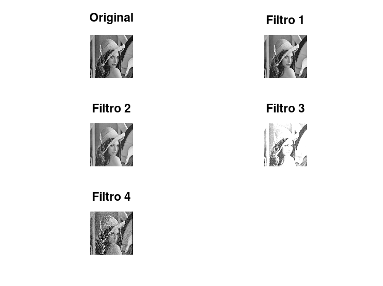
img13 = imread("doggo.bmp"); w1 = (1/9)*ones(3); w2 = [1 0 1; 1 -3 1; 0 1 0;]; w3 = [1 1 0; 1 -6 1; 1 1 1;]; imgw1 = imfilter(img13,w1); imgw2 = medfilt2(img13); imgw3 = imfilter(img13,w2); imgw4 = imfilter(img13,w3); figure subplot(3,2,1); imshow(img13,[]); title("Original"); subplot(3,2,2); imshow(imgw1,[]); title("Filtro 1"); subplot(3,2,3); imshow(imgw2,[]); title("Filtro 2"); subplot(3,2,4); imshow(imgw3,[]); title("Filtro 3"); subplot(3,2,5); imshow(imgw4,[]); title("Filtro 4");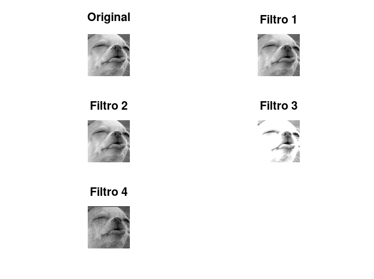